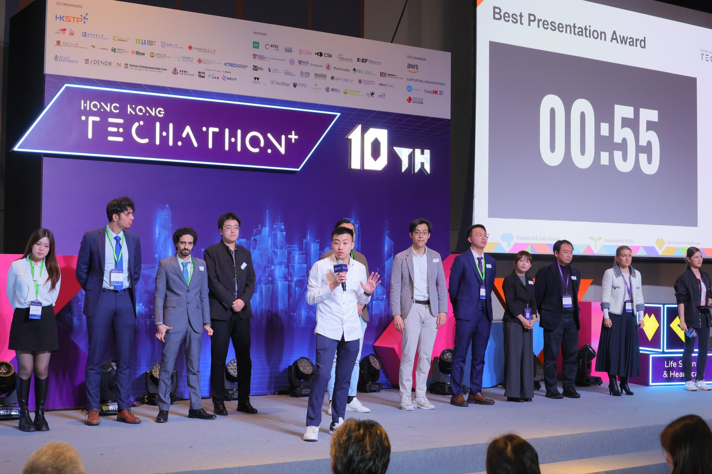
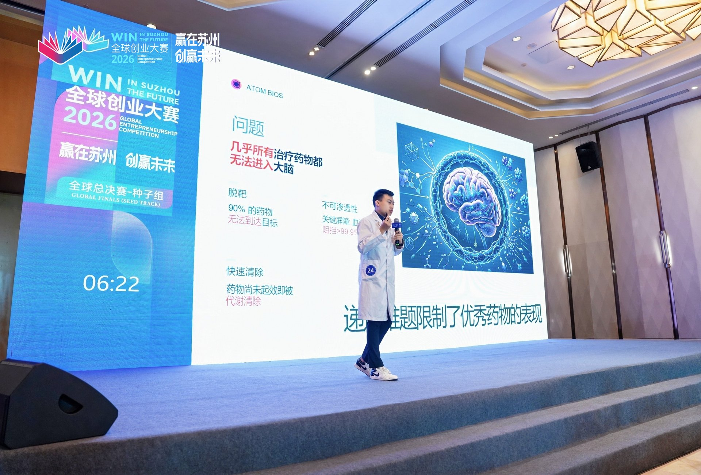
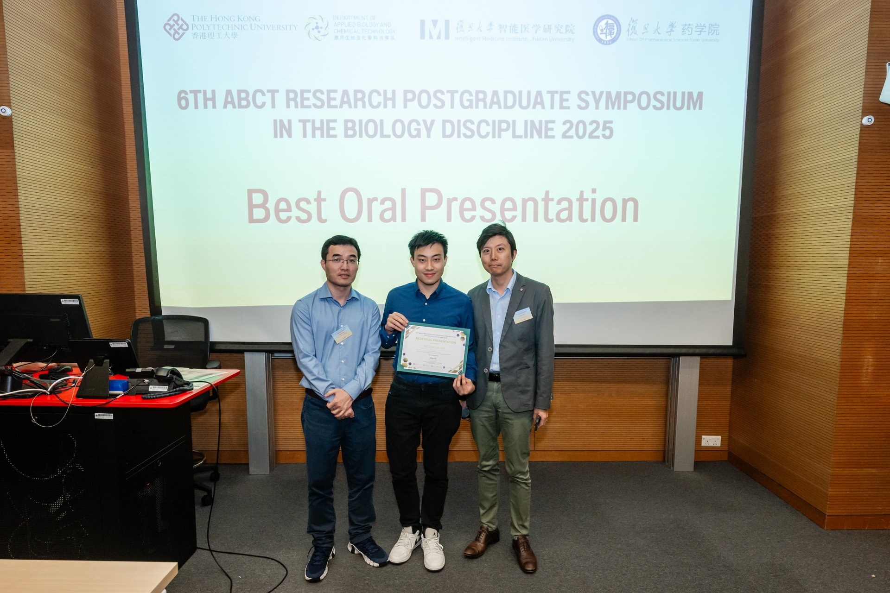
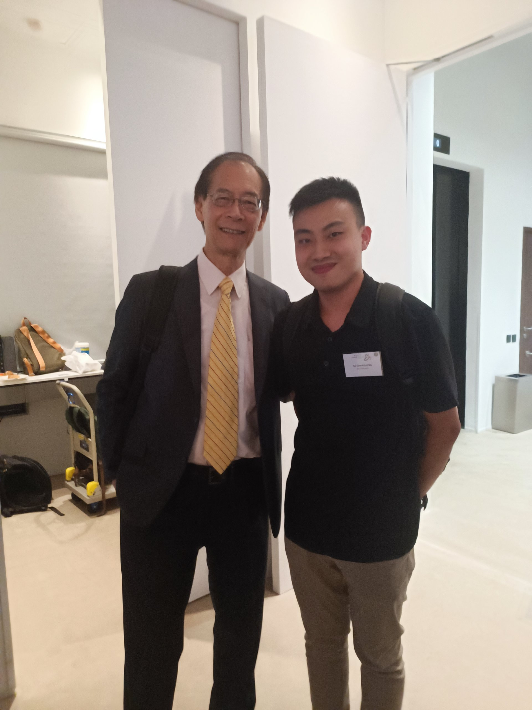

Recognition
Nobel Laureate Meeting
Selected Young Scientist
2025
Shaw Prize Roundtable
Academic Representative
2025

Techathon+ Gold Medal
10th Anniversary Edition
2026

贏在蘇州 Rising Star Award
Global Entrepreneurship Competition
2026

Best Oral Presentation
6th ABCT RPG Symposium
2025

Selected Young Scientist
Hong Kong Laureate Forum
2024

GBA STEAM Silver Award
Postgraduate Life & Health
2026
First Class Honours
HKUST, MCGA 4.006
2023